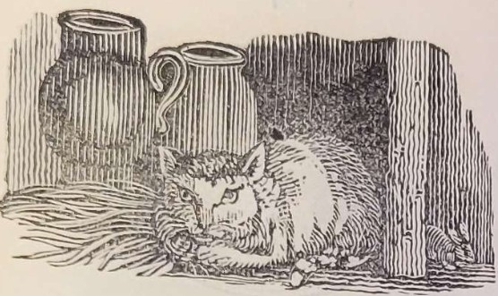

———
Why is Pussy in bed?
She is sick, says the fly,
And I fear she will die;
And that's why she's in bed.
Pray what's her disorder?
A lock'd-jaw is come on,
Said the fine downy swan;
And that's her disorder.